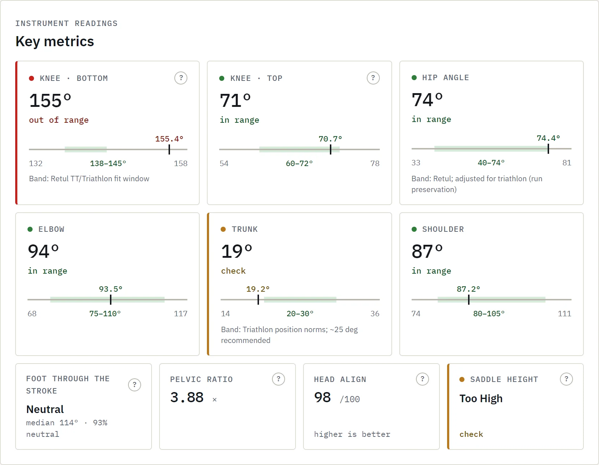
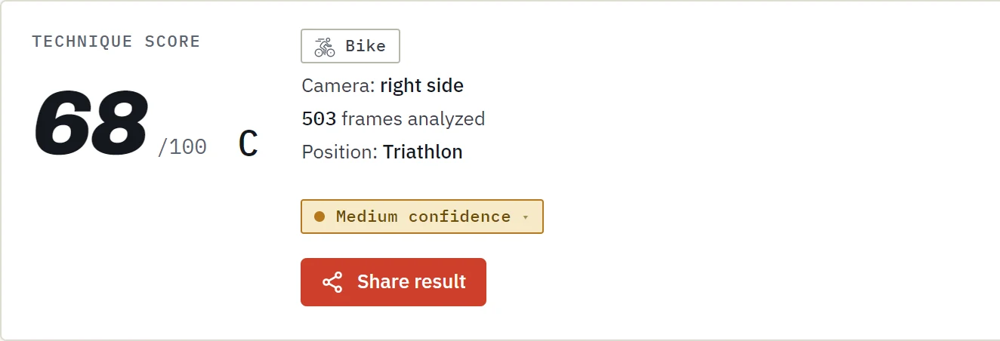
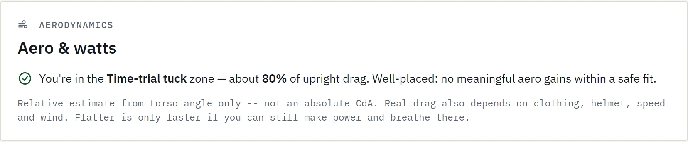
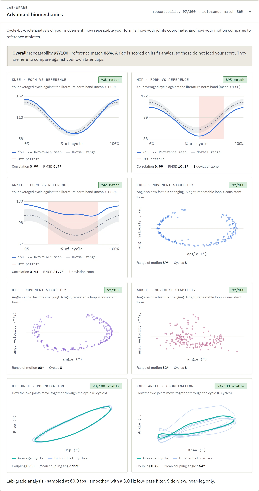
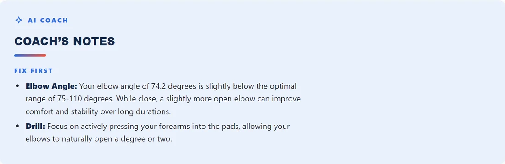
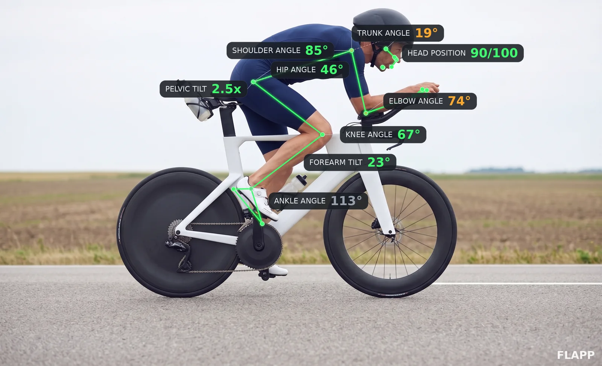
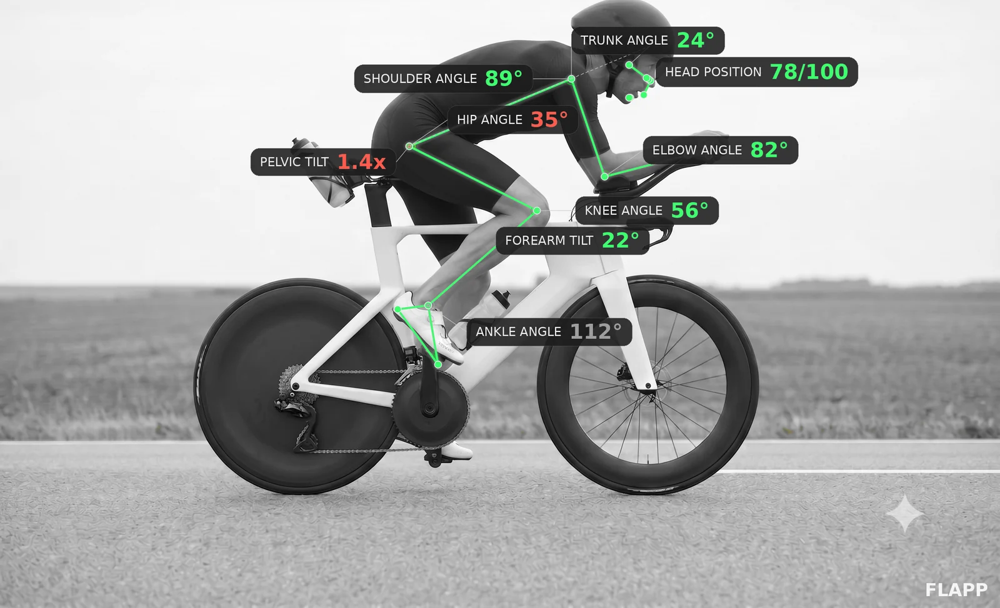

Film a 10-second side-view clip of your run or ride — or just upload a single photo. Flapp finds 33 body landmarks, measures every joint angle against reference ranges and hands back a technique score, an annotated overlay and a coaching plan — in minutes, not sessions.
A phone clip or one photo is enoughFree account · 3 analyses / month
Knee at BDC is 148° — just past optimal. Lower your saddle 5–10 mm and recheck.
A real report
Not a mockup — the screens below are a real Flapp analysis of a real triathlete's trainer ride. Every number is measured from the video.

Click to enlarge

Score · grade · confidence — then every joint, measured against reference ranges
How it works
No sensors, no lab, no motion-capture suit. The camera you already own is the instrument — Flapp does the measuring.
Prop your phone at hip height, side-on, and capture 10–20 seconds of running or riding. Short on time? One side-view photo is enough for a full angle read-out.
Pose estimation locks onto 33 landmarks — ankles, knees, hips, spine, shoulders. A photo is measured on the spot; a clip is measured on every frame, through the full movement cycle.
A 0–100 score with a grade, every angle against reference ranges, an annotated overlay and an AI action plan telling you what to change first.
Instrument readings
Coaches eyeball form. Flapp measures it — and shows you exactly where you sit inside, or outside, the reference range.
Cycle-by-cycle repeatability, joint coordination and your averaged movement against reference-athlete norm bands — the analysis a sports lab charges hundreds for.
Knee, hip, elbow, shoulder, trunk — each with your value, the reference range, and a verdict: optimal, acceptable, or out of range.
Your trunk angle translated into drag: how close you are to a time-trial tuck, and whether chasing more is worth the watts.

Click to enlarge
Click to enlargeFrom numbers to orders
Data without direction is noise. Every report ends with a coach's note that reads like a coach wrote it — because the AI is briefed like one.
One prioritized issue per session — what's wrong, why it matters, and the drill that fixes it. "Press your forearms into the pads", not "improve your position".
The angles you should protect, named and explained — so you don't break a strength while chasing a weakness.
Every note closes with a single thing to hold in your head on the next ride or run. Not a checklist — one cue.
Want a human in the loop too? Expert Review adds a personal breakdown from a competing triathlete on top of the AI — $29, any plan.
Before / after · same rider, same road
Flapp flagged a closed hip — 35° against a 45–62° reference — and a collapsed pelvic rotation. Two position corrections later, the same rider re-filmed the same stretch of road. Drag the handle.


Before · 85/100 After · 99/100◂ Drag to compare ▸
Built by an Ironman 70.3 triathlete who got tired of filming his own rides and squinting at the replay.
Two disciplines, one lens
Running · side view
Most running injuries trace back to mechanics you can't feel and can't see at full speed. Flapp slows it down and puts numbers on it.
Treadmill or outdoor · any pace
Cycling · side view
A pro fit is worth it — once. Flapp keeps you honest between fits, after a saddle swap, or when that knee starts talking on long rides.
Trainer clip is perfect · 10 seconds is enough
Pricing
Three analyses a month cost nothing, forever. Pay only when you want the exact numbers, the video and the coaching.
Starter
See the tech work and try the process.
No card required
Enthusiast
The full analysis for one discipline.
or $9 / month · yearly saves ~45%
Full
Multi-sport, progress analytics & a human review.
billed annually
Prices in USD · cancel anytime · secure checkout by Stripe
FAQ
Your next easy run or trainer session is all the data you need. Film 10 seconds, upload it, and get your score today.
Analyze your form — freeFree account · 3 analyses / month · no card required